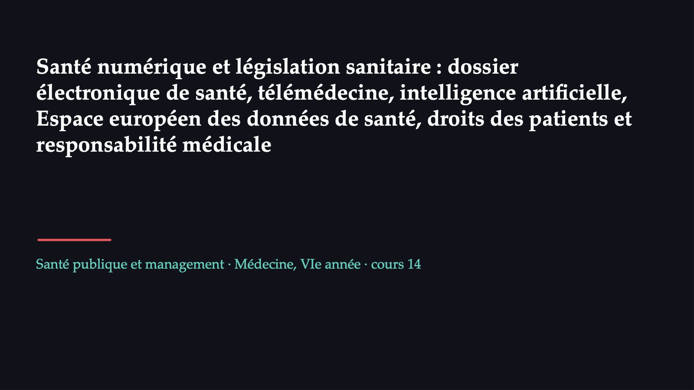
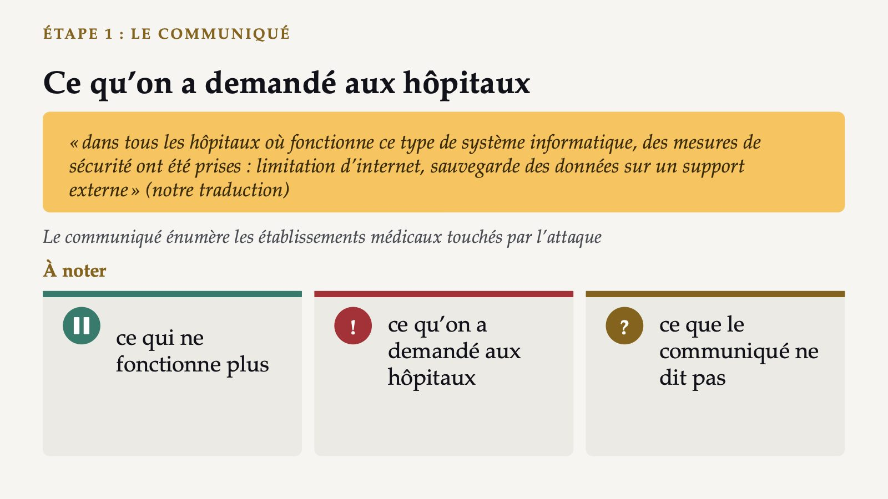
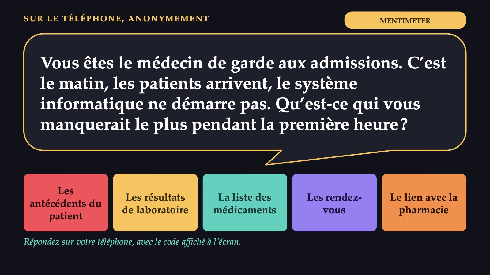
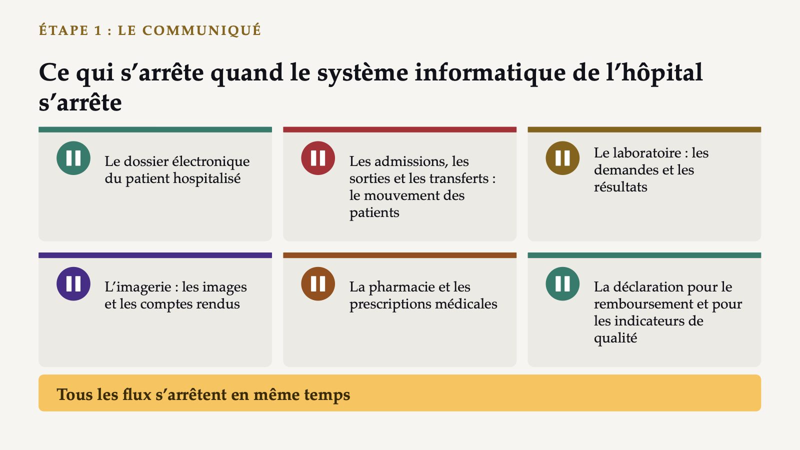
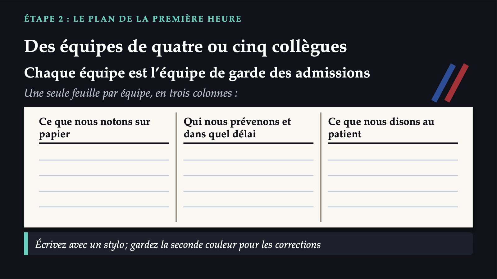
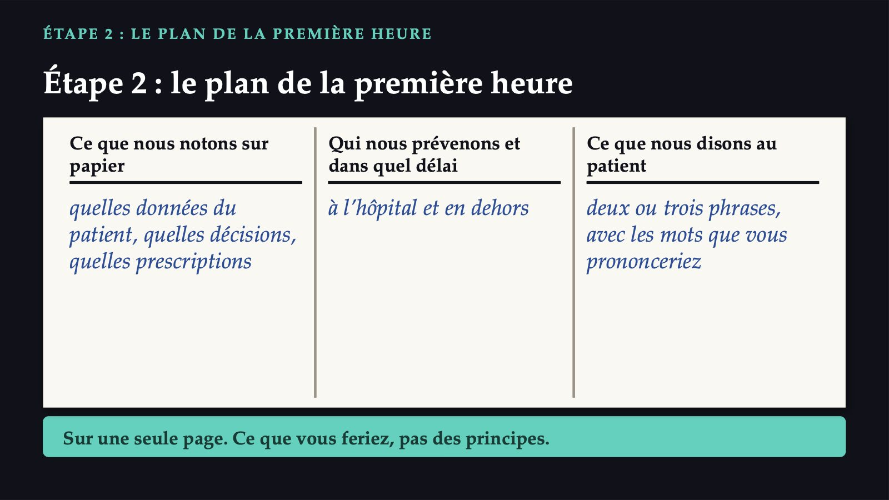
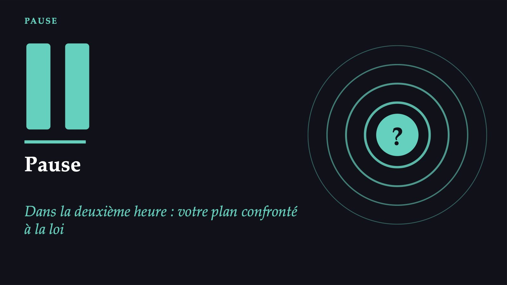
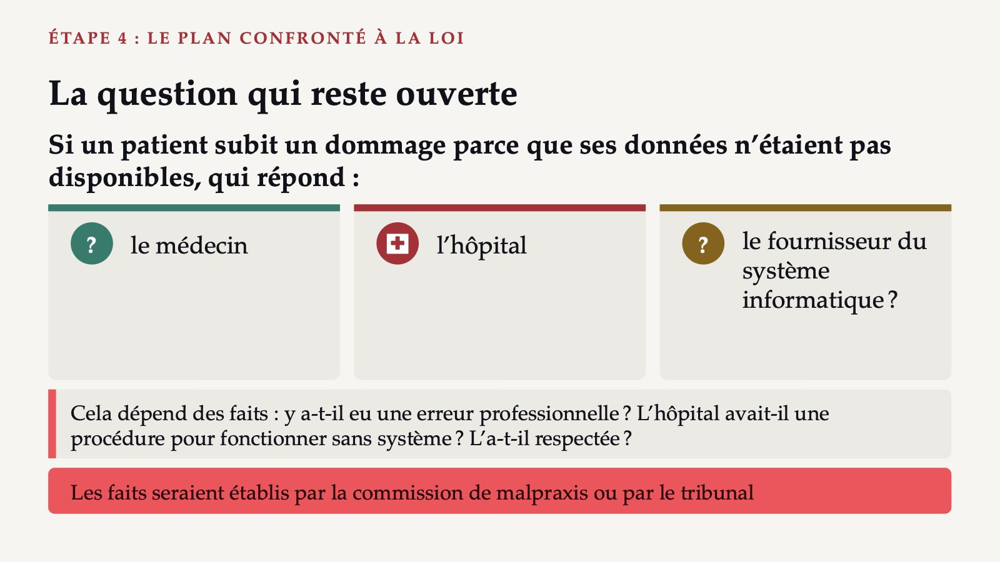
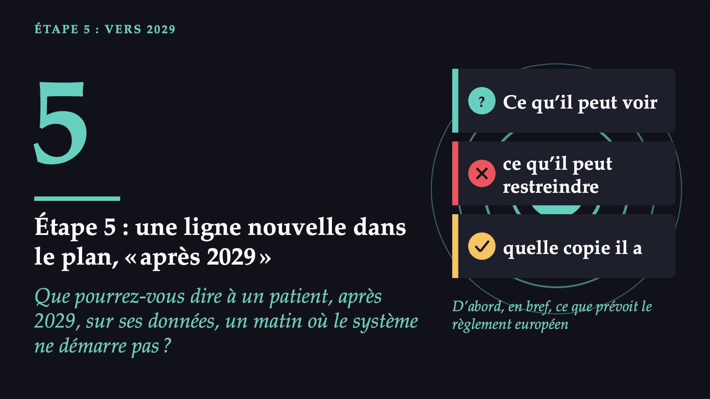
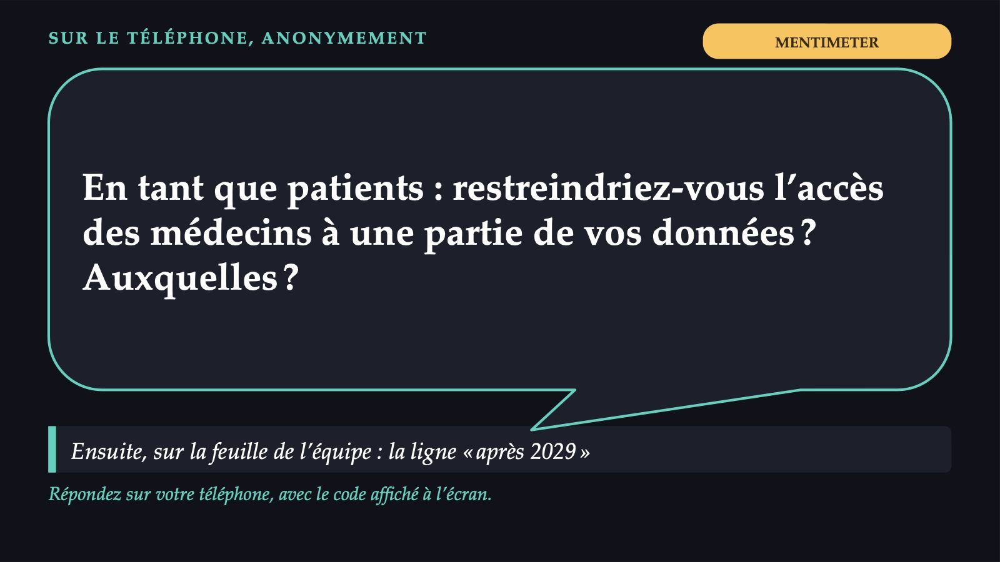

Santé numérique et législation sanitaire : dossier électronique de santé, télémédecine, intelligence artificielle, Espace européen des données de santé, droits des patients et responsabilité médicale

1 / 44Bonjour. Ceci est le dernier cours de la discipline. Il a deux moitiés qui semblent séparées, la santé numérique et la législation sanitaire, et un cas réel les relie : le matin où le système informatique de l’hôpital ne démarre pas.
Le thème de la fiche de la discipline
![OUVERTURE Le thème de la fiche de la discipline À la fin : la synthèse de la discipline « Cours interactif ; études de cas éthiques : consentement, confidentialité, faute médicale » (fiche de la discipline, cours 14) La santé numérique le dossier électronique de santé, la télémédecine, les systèmes d’information des hôpitaux et l’interopérabilité, la prescription et l’orientation électroniques, l’intelligence artificielle, l’Espace européen des données de santé La législation sanitaire la loi-cadre de la santé, les droits du patient, la protection et la confidentialité des données médicales, le malpraxis](diapozitive/C14/002.jpg) 2 / 44
2 / 44La fiche de la discipline donne à ce cours une méthode précise : un cours interactif et des études de cas éthiques sur le consentement, la confidentialité et la faute médicale. Le contenu a deux parties. La première est la santé numérique : le dossier électronique de santé, la télémédecine, les systèmes d’information des hôpitaux et leur interopérabilité, la prescription et l’orientation électroniques, l’intelligence artificielle et l’Espace européen des données de santé. La seconde est la législation sanitaire : la loi-cadre de la santé, les droits du patient, la protection des données médicales et le malpraxis. Le cours se termine par la synthèse de toute la discipline.
Aujourd’hui, vous êtes les médecins des admissions
![OUVERTURE Aujourd’hui, vous êtes les médecins des admissions Le cas est réel l’attaque informatique de février 2024 contre le système informatique utilisé par des hôpitaux Nous ne travaillons qu’avec des documents publics le communiqué du ministère de la Santé, la note de motivation du Gouvernement, la loi-cadre de la santé, deux règlements européens Les cinq étapes 1 le communiqué 2 le plan de la première heure, par équipes 3 ce qui s’est passé 4 le plan confronté à la loi 5 vers 2029 : ce que le patient pourra faire de ses données](diapozitive/C14/003.jpg) 3 / 44
3 / 44Le cas d’aujourd’hui est réel et nous ne le connaissons que par des documents publics : le communiqué du ministère de la Santé, la note de motivation du Gouvernement qui a suivi l’attaque, le texte en vigueur de la loi-cadre de la santé et les deux règlements européens qui concernent les données de santé. Les personnes de ce cours sont celles de ces documents : le personnel des hôpitaux où le système était hors service et les patients de ces hôpitaux. Nous travaillons en cinq étapes. D’abord nous lisons le communiqué. Ensuite, par équipes, vous rédigez le plan de la première heure. Vous apprenez ce qui s’est passé après ce matin-là, vous confrontez votre plan avec la loi et vous le corrigez. À la fin, nous regardons vers 2029, quand le patient pourra faire de nouvelles choses avec ses données.
Étape 1 : le communiqué du ministère de la Santé, 12.02.2024
 4 / 44
4 / 44Voici le message reçu par les hôpitaux au début de cette journée. Le ministère de la Santé a annoncé que, dans la nuit du 11 au 12 février 2024, une attaque informatique massive a eu lieu contre les serveurs sur lesquels fonctionnait le système informatique utilisé par des hôpitaux. Le communiqué dit ce qui est arrivé au système : il ne fonctionne pas, et les fichiers et les bases de données sont chiffrés. Vous avez lu le communiqué avant le cours et noté trois choses : ce qui ne fonctionne plus, ce qu’on a demandé aux hôpitaux de faire et ce que le communiqué ne dit pas.
Ce qu’on a demandé aux hôpitaux

5 / 44Le communiqué énumère les établissements touchés et dit ce qui a été fait dans tous les hôpitaux qui utilisaient le même type de système : des mesures de sécurité, la limitation d’internet, la sauvegarde des données sur un support externe. Regardez ce que vous avez noté : ce qui ne fonctionne plus, ce qu’on a demandé aux hôpitaux et ce qui manque dans le communiqué. Ce qui manque compte autant que ce qui est écrit.
Vous êtes le médecin de garde aux admissions. C’est le matin, les patients arrivent, le système informatique ne démarre pas. Qu’est-ce qui vous manquerait le plus pendant la première heure ?

6 / 44Prenez votre téléphone. La question porte sur vous et n’a ni bonne ni mauvaise réponse : si vous étiez le médecin de garde aux admissions ce matin, qu’est-ce qui vous manquerait le plus pendant la première heure, sans système ? Les antécédents du patient, les résultats de laboratoire, la liste des médicaments, les rendez-vous ou le lien avec la pharmacie. Personne ne voit qui a choisi quoi.
Ce qui s’arrête quand le système informatique de l’hôpital s’arrête

7 / 44Ce que vous avez choisi sur le téléphone est une partie du système d’information de l’hôpital, l’ensemble des logiciels par lesquels circule l’information d’un hôpital. Il a quelques composantes standard : le dossier électronique du patient hospitalisé, le module des admissions, sorties et transferts, le système de laboratoire, les systèmes d’imagerie, les modules de pharmacie et de prescriptions médicales, et les modules par lesquels l’hôpital déclare son activité pour le remboursement et pour les indicateurs de qualité. Quand le système s’arrête, tout s’arrête en même temps : le médecin des admissions ne voit plus les antécédents, le laboratoire ne reçoit plus les demandes par voie électronique, la pharmacie ne voit plus les prescriptions et l’hôpital ne peut plus déclarer ce qu’il fait.
Le dossier électronique de santé (DES) du patient
![ÉTAPE 1 : LE COMMUNIQUÉ Le dossier électronique de santé (DES) du patient Loi n° 95/2006, titre IX¹ : « enregistrements électroniques consolidés au niveau national, comprenant des données et des informations médicales nécessaires aux médecins et aux patients » (notre traduction) Des données cliniques, biologiques, diagnostiques et thérapeutiques, accumulées tout au long de la vie ; le dossier se constitue dès la transmission du premier document médical Pourquoi il est utilisé de façon inégale l’exhaustivité l’interopérabilité l’interface l’accès du patient la formation Un dossier incomplet est peu utilisé un dossier peu utilisé reste incomplet](diapozitive/C14/008.jpg) 8 / 44
8 / 44En dehors de l’hôpital, il y a le dossier électronique de santé du patient, réglementé par un titre distinct de la loi-cadre de la santé, le titre IX¹ de la Loi n° 95/2006. La loi le définit comme des enregistrements électroniques consolidés au niveau national, avec les données et les informations médicales nécessaires aux médecins et aux patients : des données cliniques, biologiques, diagnostiques et thérapeutiques, accumulées tout au long de la vie. Le dossier se constitue dès la transmission du premier document médical du patient. L’écart entre ce que promet le dossier et ce que le médecin y trouve a cinq causes : tous les prestataires ne chargent pas les données avec la même régularité, les systèmes n’échangent pas leurs données sans traduction, l’interface demande un effort, l’accès du patient exige une authentification et des compétences numériques, et sans formation l’outil n’est pas utilisé à la mesure de son potentiel. Il en résulte un cercle vicieux : un dossier incomplet est peu utilisé, et un dossier peu utilisé reste incomplet.
La prescription et l’orientation électroniques
![ÉTAPE 1 : LE COMMUNIQUÉ La prescription et l’orientation électroniques La loi exige du personnel médical qu’il applique les standards thérapeutiques des guides de pratique de la spécialité Le système de prescription est une aide, pas un substitut : l’erreur de choix du médicament reste celle du médecin Le circuit en cinq étapes l’évaluation du patient la prescription électronique, validée sur la plateforme de l’assurance maladie l’orientation électronique la délivrance du médicament par le pharmacien l’enregistrement dans le dossier électronique de santé](diapozitive/C14/009.jpg) 9 / 44
9 / 44En soins ambulatoires, le circuit numérique du patient a cinq étapes : le médecin évalue le patient, établit la prescription électronique, validée sur la plateforme de l’assurance maladie, établit au besoin l’orientation électronique, le pharmacien récupère la prescription et délivre le médicament, et les actes sont enregistrés dans le dossier électronique de santé. Le matin du cas, le médecin des admissions ne peut plus établir de prescription électronique. Et les jours ordinaires aussi, le système de prescription est une aide, pas un substitut : il ne peut pas vérifier si le médicament choisi convient au diagnostic. La loi exige du personnel médical qu’il applique les standards thérapeutiques établis par les guides de pratique de la spécialité, et un système informatique ne transfère pas cette obligation du médecin au logiciel.
Des équipes de quatre ou cinq collègues

10 / 44Formez des équipes de quatre ou cinq collègues, avec ceux qui sont à côté de vous. Chaque équipe est l’équipe de garde des admissions et a une seule feuille, divisée en trois colonnes : ce que nous notons sur papier, qui nous prévenons et dans quel délai, ce que nous disons au patient. Écrivez avec un stylo ; vous utiliserez la seconde couleur plus tard, pour les corrections.
Étape 2 : le plan de la première heure

11 / 44C’est maintenant à vous. Vous êtes l’équipe de garde des admissions, c’est le matin, les patients arrivent et le système informatique ne démarre pas. Écrivez le plan de la première heure sur une seule page. Dans la première colonne, ce que vous notez sur papier : quelles données du patient, quelles décisions, quelles prescriptions. Dans la deuxième, qui vous prévenez et dans quel délai, à l’hôpital et en dehors. Dans la troisième, ce que vous dites au patient, en deux ou trois phrases, avec les mots que vous prononceriez. N’écrivez pas des principes, mais ce que vous feriez. Ce que vous avez vu jusqu’ici peut vous aider : ce qui s’arrête avec le système et comment circule une prescription.
Étape 3 : ce qui s’est passé
![ÉTAPE 3 : CE QUI S’EST PASSÉ Étape 3 : ce qui s’est passé La note parle de la campagne d’attaques « de la période du dix au douze février deux mille vingt-quatre » ; le communiqué, de la nuit du 11 au 12 février 2024 La note de motivation de l’ordonnance d’urgence par laquelle le Gouvernement a modifié la loi-cadre de la santé après l’attaque : Un serveur sur lequel fonctionnait l’application Hipocrate, « utilisée par quatre-vingt-six établissements hospitaliers de Roumanie » (notre traduction) « l’activité de vingt-six hôpitaux a été affectée de manière significative, tant du point de vue de la fourniture de l’acte médical que de celui de la cybersécurité des données » (notre traduction)](diapozitive/C14/012.jpg) 12 / 44
12 / 44Voici ce que disent les documents publiés après ce matin-là. La note de motivation de l’ordonnance d’urgence par laquelle le Gouvernement a modifié la loi-cadre de la santé décrit l’attaque : un serveur sur lequel fonctionnait l’application Hipocrate, utilisée par 86 établissements hospitaliers de Roumanie. L’activité de 26 hôpitaux a été affectée de manière significative, tant dans la fourniture de l’acte médical que dans la cybersécurité des données. La note nomme quelques-uns des hôpitaux touchés, à Bucarest et dans les départements de Buzău et de Constanța. Remarquez aussi une différence entre les documents : la note parle de la période du 10 au 12 février 2024, le communiqué de la nuit du 11 au 12 février. Nous gardons les deux, chacun avec son document.
La réponse de l’État : un alinéa nouveau dans la loi-cadre
![ÉTAPE 3 : CE QUI S’EST PASSÉ La réponse de l’État : un alinéa nouveau dans la loi-cadre Loi n° 95/2006, art. 3, alinéa (2), modifié par l’ordonnance d’urgence du Gouvernement n° 66/2024 (Monitorul Oficial n° 563 du 17.06.2024) Les autorités compétentes selon la loi sur la cybersécurité et la défense cybernétiques (Loi n° 58/2023, art. 10, alinéa (1), lettres a) et d)) « mènent des activités de connaissance, d’analyse, de prévention et de contre-mesure des incidents et des attaques cybernétiques visant les infrastructures informatiques et de communications d’intérêt national relevant du domaine réglementé par la présente loi » (notre traduction)](diapozitive/C14/013.jpg) 13 / 44
13 / 44La réponse de l’État a été un alinéa nouveau dans le premier article de la loi-cadre de la santé. La forme en vigueur de l’art. 3, alinéa (2), de la Loi n° 95/2006 renvoie aux autorités que la loi sur la cybersécurité et la défense cybernétiques désigne comme compétentes et dit qu’elles mènent des activités de connaissance, d’analyse, de prévention et de contre-mesure des incidents et des attaques cybernétiques visant les infrastructures informatiques et de communications d’intérêt national du domaine de la santé. L’article a été modifié par l’ordonnance d’urgence du Gouvernement n° 66/2024.
Ce que disent les documents, et ce qu’ils ne disent pas
![ÉTAPE 3 : CE QUI S’EST PASSÉ Ce que disent les documents, et ce qu’ils ne disent pas En marge du plan : qu’est-ce que vous n’aviez pas prévu ? Un système commun à de nombreux hôpitaux · un problème de sécurité des données, pas seulement de soins Ils disent le système attaqué était utilisé par de nombreux hôpitaux l’activité d’une partie d’entre eux a été touchée, dans les soins aux patients et dans la sécurité des données l’État a modifié la loi-cadre Ils ne disent pas ? combien de temps l’interruption a duré dans chaque hôpital ? comment les médecins ont travaillé pendant ces jours ? si un hôpital a notifié l’autorité de protection des données](diapozitive/C14/014.jpg) 14 / 44
14 / 44Les documents publics disent donc trois choses : le système attaqué était utilisé par de nombreux hôpitaux ; l’activité d’une partie d’entre eux a été touchée, à la fois dans les soins aux patients et dans la sécurité des données ; l’État a répondu en modifiant la loi-cadre. Ils ne disent pas combien de temps l’interruption a duré dans chaque hôpital, comment les médecins ont travaillé pendant ces jours ni si un hôpital a notifié l’autorité de protection des données. C’est pourquoi nous ne l’affirmons pas non plus. Relisez votre plan et notez en marge ce que vous n’aviez pas prévu : que le système était commun à de nombreux hôpitaux et que le problème touchait aussi la sécurité des données, pas seulement les soins.
Loi n° 95/2006 relative à la réforme dans le domaine de la santé : la loi-cadre
![LA CARTE DE LA LOI Loi n° 95/2006 relative à la réforme dans le domaine de la santé : la loi-cadre Des titres numérotés de I à XXI, plus des titres intercalés (par exemple IX¹, le dossier électronique de santé) Pour le médecin I la santé publique III les soins de santé primaires IV l’assistance médicale d’urgence et les premiers secours qualifiés VII les hôpitaux VIII l’assurance maladie sociale IX¹ le dossier électronique de santé XII l’exercice de la profession de médecin et le Collège des médecins XVI la responsabilité civile du personnel médical XVIII le médicament XIX les soins de santé transfrontaliers XX les dispositifs médicaux Elle se lit toujours dans sa forme consolidée actuelle, sur le portail législatif du ministère de la Justice](diapozitive/C14/015.jpg) 15 / 44
15 / 44Pour corriger votre plan, vous avez besoin de la carte de la loi. La Loi n° 95/2006 relative à la réforme dans le domaine de la santé est la loi-cadre du système. Sa forme consolidée comporte des titres numérotés de I à XXI, auxquels se sont ajoutés des titres intercalés, comme le titre IX¹ sur le dossier électronique de santé. Pour votre pratique comptent surtout les titres sur la santé publique, les soins de santé primaires, l’urgence, les hôpitaux, l’assurance maladie sociale, le dossier électronique, l’exercice de la profession de médecin, la responsabilité civile du personnel médical, le médicament, les soins de santé transfrontaliers et les dispositifs médicaux. La loi a été modifiée très souvent ; lisez-la toujours dans sa forme consolidée actuelle, sur le portail législatif du ministère de la Justice.
Les droits du patient : Loi n° 46/2003
![LA CARTE DE LA LOI Les droits du patient : Loi n° 46/2003 Le non-respect des droits engage, selon le cas, la responsabilité disciplinaire, contraventionnelle ou pénale Des soins de la plus haute qualité, conformément aux ressources disponibles · le respect, sans discrimination ? L’information : l’état de santé, les interventions proposées, les risques de chaque procédure, les alternatives, y compris l’absence de traitement ! Un deuxième avis médical · à la sortie, un résumé écrit des examens, du diagnostic, du traitement et des soins Le consentement · la confidentialité et la vie privée · le « droit à l’oubli » (chapitre introduit en 2022)](diapozitive/C14/016.jpg) 16 / 44
16 / 44La deuxième loi de la carte est la Loi sur les droits des patients n° 46/2003, organisée en chapitres, un pour chaque groupe de droits. Le patient a droit à des soins de la plus haute qualité, conformément aux ressources disponibles, et au respect, sans discrimination. Il doit être informé de son état de santé, des interventions proposées, des risques de chaque procédure et des alternatives, y compris l’absence de traitement. Il a droit à un deuxième avis médical et, à la sortie, à un résumé écrit. Le chapitre sur le consentement concerne l’intervention médicale, celui sur la confidentialité concerne les informations et la vie privée. Un chapitre introduit en 2022 réglemente le droit à l’oubli : le survivant d’un cancer n’a plus à déclarer la maladie lors de la conclusion de certains contrats d’assurance, dans les conditions prévues par la loi. Le non-respect de la confidentialité et des autres droits engage, selon le cas, la responsabilité disciplinaire, contraventionnelle ou pénale. Dans la deuxième heure, nous utilisons ces lois sur votre plan.
?

17 / 44Nous nous arrêtons ici. Dans la deuxième heure, chaque équipe confronte son plan avec la loi et le corrige. Gardez votre feuille et la seconde couleur.
Le consentement éclairé : deux lois, lues ensemble
![QUATRE IDÉES POUR LA CORRECTION Le consentement éclairé : deux lois, lues ensemble Le médecin traitant est responsable s’il n’obtient pas le consentement ; l’exception : l’urgence sans discernement, quand on ne peut contacter ni le représentant légal ni le proche parent ! Loi n° 46/2003, chapitre sur le consentement du patient à l’intervention médicale ! Loi n° 95/2006, titre XVI, chapitre « Acordul pacientului informat » (l’accord du patient informé) L’accord écrit, pour les méthodes de prévention, de diagnostic et de traitement présentant un risque potentiel, après qu’elles ont été expliquées L’information comprend : « le diagnostic, la nature et le but du traitement, les risques et les conséquences du traitement proposé, les alternatives thérapeutiques viables, leurs risques et leurs conséquences, le pronostic de la maladie sans application du traitement » (notre traduction)](diapozitive/C14/018.jpg) 18 / 44
18 / 44La première idée est le consentement. Il est réglementé par deux lois qui se lisent ensemble : la loi sur les droits du patient et le titre XVI de la loi-cadre, chapitre sur l’accord du patient informé. La loi-cadre exige l’accord écrit du patient pour les méthodes de prévention, de diagnostic et de traitement présentant un risque potentiel, après qu’elles lui ont été expliquées. L’information se fait à un niveau scientifique raisonnable pour sa capacité de compréhension et comprend le diagnostic, la nature et le but du traitement, ses risques et ses conséquences, les alternatives viables et le pronostic de la maladie sans traitement. Le médecin traitant est responsable s’il n’obtient pas le consentement éclairé ; l’exception est l’urgence dans laquelle le patient n’a pas de discernement et où ni le représentant légal ni le proche parent ne peuvent être contactés.
Quand le consentement est valide
![QUATRE IDÉES POUR LA CORRECTION Quand le consentement est valide Quatre conditions, ensemble la capacité de décider l’information complète et comprise la décision volontaire le consentement à l’acte concret Un processus documenté, pas un formulaire signé ; la vérification : le patient dit, avec ses mots, ce qu’il a compris La capacité s’évalue pour chaque décision il comprend, retient, raisonne, communique un choix ; un diagnostic de démence ne signifie pas automatiquement son absence Sans capacité le représentant légal décide, le patient associé autant que sa compréhension le permet ; si le représentant refuse, la commission d’arbitrage de spécialité](diapozitive/C14/019.jpg) 19 / 44
19 / 44En éthique médicale, un consentement est valide s’il remplit quatre conditions ensemble : le patient a la capacité de décider, il a reçu l’information complète et l’a comprise, il décide volontairement, sans pression, et il consent à l’acte concret. S’il en manque une, le consentement est vicié. Le consentement n’est pas un formulaire signé, mais un processus documenté ; une façon simple de le vérifier est de demander au patient de dire, avec ses mots, ce qu’il a compris. La capacité s’évalue pour chaque décision : le patient comprend l’information, la retient, raisonne à partir d’elle et communique un choix. Un diagnostic de démence ne signifie pas automatiquement l’absence de capacité, et la famille ne prend pas la place du patient qui peut décider. Quand le patient n’a pas la capacité, le représentant légal décide ; s’il refuse une intervention que les médecins jugent dans l’intérêt du patient, la décision passe à une commission d’arbitrage de spécialité.
La confidentialité et le secret médical
![QUATRE IDÉES POUR LA CORRECTION La confidentialité et le secret médical « toutes les informations concernant l’état du patient, les résultats des examens, le diagnostic, le pronostic, le traitement, les données personnelles sont confidentielles même après son décès » (Loi n° 46/2003 ; notre traduction) Elles ne se donnent qu’avec le consentement explicite du patient ou si la loi l’exige expressément ; sans consentement, seulement à d’autres prestataires accrédités, impliqués dans le traitement La confidentialité protège le patient vis-à-vis de quiconque, y compris de sa famille Les responsabilités peuvent se cumuler disciplinaire, contraventionnelle ou pénale civile administrative, selon le règlement européen sur la protection des données](diapozitive/C14/020.jpg) 20 / 44
20 / 44La deuxième idée est la confidentialité. La loi sur les droits du patient dit que toutes les informations sur l’état du patient, les résultats des examens, le diagnostic, le pronostic, le traitement et les données personnelles sont confidentielles, même après son décès. Elles ne peuvent être fournies qu’avec le consentement explicite du patient ou si la loi l’exige expressément ; le consentement n’est pas nécessaire quand d’autres prestataires accrédités, impliqués dans son traitement, les demandent. La confidentialité protège le patient vis-à-vis de quiconque, y compris de sa famille : le conjoint n’a pas de droit automatique à l’information. Sa violation peut engager, pour le même acte, la responsabilité disciplinaire, contraventionnelle ou pénale, la responsabilité civile selon la loi-cadre et la responsabilité administrative selon le règlement européen sur la protection des données.
La violation de données à caractère personnel
![QUATRE IDÉES POUR LA CORRECTION La violation de données à caractère personnel Règlement (UE) 2016/679, règlement général sur la protection des données, art. 4, point 12 : « une violation de la sécurité entraînant, de manière accidentelle ou illicite, la destruction, la perte, l’altération ou la divulgation non autorisée de données à caractère personnel transmises, conservées ou traitées d’une autre manière, ou l’accès non autorisé à ces données » (notre traduction) La définition n’exige pas que les données aient été copiées : elle couvre aussi leur altération ou leur perte](diapozitive/C14/021.jpg) 21 / 44
21 / 44La troisième idée est la violation de données. Le règlement général sur la protection des données, le règlement (UE) 2016/679, la définit à l’art. 4, point 12 : une violation de la sécurité qui entraîne, de manière accidentelle ou illicite, la destruction, la perte, l’altération ou la divulgation non autorisée de données à caractère personnel, ou l’accès non autorisé à ces données. Lisez la définition avec attention : elle n’exige pas que les données aient été copiées par quelqu’un ; elle couvre aussi leur altération ou leur perte.
Qui notifie, et dans quel délai
![QUATRE IDÉES POUR LA CORRECTION Qui notifie, et dans quel délai Les amendes jusqu’à 20 millions d’euros ou 4 % du chiffre d’affaires (art. 83, paragraphe (5)) concernent les principes et les droits, pas la notification ; pour les autorités publiques, art. 83, paragraphe (7) L’obligation incombe au responsable du traitement, c’est-à-dire à l’hôpital, et non au médecin de garde Art. 33, paragraphe (1) : à l’autorité de contrôle, « sans retard injustifié et, si possible, dans un délai de soixante-douze heures au plus à compter de la date à laquelle il en a pris connaissance » (notre traduction) L’exception : l’absence de risque pour les droits et libertés des personnes, que le responsable du traitement doit démontrer (considérant 85 ; le texte roumain de l’art. 33 la rend sans négation) Risque élevé : le responsable du traitement informe aussi les patients, sans retard injustifié (art. 34, paragraphe (1))](diapozitive/C14/022.jpg) 22 / 44
22 / 44Qui notifie, et dans quel délai ? L’obligation incombe au responsable du traitement, c’est-à-dire à l’hôpital, et non au médecin de garde. Le responsable du traitement notifie la violation à l’autorité de contrôle sans retard injustifié et, si possible, dans un délai de 72 heures au plus à compter du moment où il en a pris connaissance. L’exception est l’absence de risque pour les droits et libertés des personnes, et la preuve en incombe au responsable du traitement ; c’est ainsi que la formule le considérant 85 du règlement, parce que le texte roumain de l’art. 33 la rend sans négation. Si la violation peut engendrer un risque élevé, le responsable du traitement informe aussi les patients, sans retard injustifié. Les amendes jusqu’à 20 millions d’euros ou 4 % du chiffre d’affaires concernent les principes du traitement et les droits de la personne, pas la notification. Pour les hôpitaux publics compte aussi l’art. 83, paragraphe (7) : chaque État membre peut établir si et dans quelle mesure des amendes administratives peuvent être imposées aux autorités publiques et aux organismes publics.
Le malpraxis : la définition légale et les trois conditions
![QUATRE IDÉES POUR LA CORRECTION Le malpraxis : la définition légale et les trois conditions Les trois ensemble ; chaque personne impliquée répond « proportionnellement au degré de culpabilité » (art. 654, alinéa (1) ; notre traduction) 1. Le fait 2. Le préjudice causé au patient 3. Le lien de causalité « l’erreur professionnelle commise dans l’exercice de l’acte médical ou médico-pharmaceutique, génératrice de préjudices pour le patient, impliquant la responsabilité civile du personnel médical et du fournisseur de produits et de services médicaux, sanitaires et pharmaceutiques » (Loi n° 95/2006, art. 653, alinéa (1), lettre b ; notre traduction) l’erreur professionnelle, qui comprend « la négligence, l’imprudence ou des connaissances médicales insuffisantes » (art. 653, alinéa (2) ; notre traduction) ; l’étalon : les guides de pratique approuvés au niveau national ou, à défaut, les standards reconnus par la communauté médicale de la spécialité le préjudice découle de l’erreur](diapozitive/C14/023.jpg) 23 / 44
23 / 44La quatrième idée est la responsabilité. La loi définit le malpraxis comme l’erreur professionnelle commise dans l’exercice de l’acte médical ou médico-pharmaceutique, génératrice de préjudices pour le patient, qui implique la responsabilité civile du personnel médical et du fournisseur de services. De la définition et des articles qui la suivent découlent trois conditions, qui doivent être réunies ensemble. La première est le fait : l’erreur professionnelle, qui comprend la négligence, l’imprudence ou les connaissances médicales insuffisantes, jugée d’après les guides de pratique approuvés au niveau national ou, à défaut, d’après les standards reconnus par la communauté médicale de la spécialité. La deuxième est le préjudice causé au patient. La troisième est le lien de causalité : le préjudice doit découler de l’erreur. S’il en manque une, il n’y a pas de malpraxis au sens juridique, même si le patient est mécontent ou si un événement indésirable a eu lieu.
Étape 4 : corrigez le plan avec la loi
![ÉTAPE 4 : LE PLAN CONFRONTÉ À LA LOI Étape 4 : corrigez le plan avec la loi À la fin, deux équipes lisent leurs corrections : ce qui compte, ce sont les arguments Avec la seconde couleur, sur la même feuille, colonne par colonne : Ce que nous notons sur papier quelles données de santé notez-vous, et comment les gardez-vous confidentielles ? Qui nous prévenons et dans quel délai avez-vous prévenu les personnes de l’hôpital qui peuvent déclencher la notification à l’autorité de protection des données ? Avez-vous fixé un délai qui ne vous appartient pas ? Ce que nous disons au patient l’information est-elle suffisante pour le consentement aux actes de ce jour-là ?](diapozitive/C14/024.jpg) 24 / 44
24 / 44Maintenant vous corrigez votre plan, sur la même feuille, avec la seconde couleur. Prenez les colonnes l’une après l’autre. Pour ce que vous notez sur papier : quelles données de santé notez-vous et comment les gardez-vous confidentielles ? Pour qui vous prévenez : avez-vous prévenu les personnes de l’hôpital qui peuvent déclencher la notification à l’autorité de protection des données, et avez-vous fixé un délai qui ne vous appartient pas ? Pour ce que vous dites au patient : l’information est-elle suffisante pour le consentement aux actes de ce jour-là ? À l’écran restent, colonne par colonne, les textes de loi dont vous avez besoin. À la fin, deux équipes lisent leurs corrections et nous discutons des arguments ; il n’y a pas une seule bonne version.
Pour la colonne « Ce que nous notons sur papier » : les données de santé et le fondement du traitement
![ÉTAPE 4 : LE PLAN CONFRONTÉ À LA LOI Pour la colonne « Ce que nous notons sur papier » : les données de santé et le fondement du traitement Les données concernant la santé sont une catégorie particulière : leur traitement est interdit en règle générale et permis seulement sur les fondements du règlement Pour les soins, le fondement est l’art. 9, paragraphe (2), point h) : le diagnostic médical, l’assistance médicale, le traitement, la gestion des systèmes et des services de santé Pour soigner un patient, il n’est pas besoin d’un « consentement au traitement des données » : le consentement de la Loi n° 46/2003 concerne l’acte médical Un formulaire d’« accord relatif à la protection des données » signé à l’admission ne remplace ni l’information pour l’acte médical, ni l’information sur le traitement des données](diapozitive/C14/025.jpg) 25 / 44
25 / 44Pour la première colonne. Le règlement général sur la protection des données interdit en règle générale le traitement des données concernant la santé et ne le permet que sur les fondements qu’il énumère. Pour les soins, le fondement est celui de l’art. 9, paragraphe (2), point h) : le traitement est nécessaire pour établir un diagnostic médical, pour fournir une assistance médicale ou un traitement, et pour gérer les systèmes et les services de santé. D’où une distinction que beaucoup de médecins confondent : pour soigner un patient, vous n’avez pas besoin d’un consentement au traitement des données, parce que le fondement est le point h). Le consentement de la loi sur les droits du patient concerne l’acte médical. Un formulaire d’accord relatif à la protection des données, signé à l’admission, ne remplace ni l’information pour l’acte médical, ni l’information sur le traitement des données.
Les droits du patient sur ses données et les règles de travail du clinicien
![ÉTAPE 4 : LE PLAN CONFRONTÉ À LA LOI Les droits du patient sur ses données et les règles de travail du clinicien Le droit d’accès (art. 15) de rectification (art. 16) d’effacement (art. 17), limité en santé par les durées légales de conservation à la portabilité (art. 20) d’opposition (art. 21) Les règles de travail de ce cours (ce ne sont pas des textes de loi) seulement les données des patients que vous soignez le compte personnel, pas un compte commun pas de copies sur des appareils personnels non sécurisés tout incident de sécurité, signalé immédiatement par la voie interne de l’hôpital de l’aide pour la copie demandée par le patient](diapozitive/C14/026.jpg) 26 / 44
26 / 44Le patient a, vis-à-vis de l’hôpital, les droits de toute personne dont les données sont traitées : le droit d’accès, par exemple à une copie de son dossier, de rectification, d’effacement, limité en santé par les durées légales de conservation des documents médicaux, à la portabilité et d’opposition. Le cours vous propose cinq règles de travail, qui ne sont pas des textes de loi : n’accédez qu’aux données des patients que vous soignez ; utilisez votre compte personnel, pas un compte commun ; ne copiez pas de données sur des appareils personnels non sécurisés ; signalez immédiatement, par la voie interne de l’hôpital, tout incident de sécurité que vous remarquez ; à la demande du patient, aidez-le à obtenir la copie de ses données.
Pour la colonne « Ce que nous disons au patient » : le refus, l’urgence, les mineurs
![ÉTAPE 4 : LE PLAN CONFRONTÉ À LA LOI Pour la colonne « Ce que nous disons au patient » : le refus, l’urgence, les mineurs L’acte médical à distance exige le même consentement que l’acte en présentiel Le patient peut refuser ou arrêter une intervention, en assumant par écrit la responsabilité ; les conséquences du refus lui sont expliquées L’urgence quand le patient ne peut pas exprimer sa volonté, l’accord peut se déduire d’une expression antérieure de sa volonté Sans représentant légal et sans proche à contacter l’autorisation de l’autorité tutélaire ou, si le retard mettrait la santé et la vie en danger de façon irréversible, l’intervention sans elle L’âge du consentement 18 ans ; le mineur consent seul en urgence, avec discernement, quand les parents ne peuvent pas être contactés, et, au-delà de 16 ans, pour les problèmes sexuels et reproductifs](diapozitive/C14/027.jpg) 27 / 44
27 / 44Pour la troisième colonne, quelques situations particulières. Le patient a le droit de refuser ou d’arrêter une intervention, en assumant par écrit la responsabilité de sa décision, et les conséquences du refus doivent lui être expliquées. En urgence, quand le patient ne peut pas exprimer sa volonté, le personnel médical peut déduire l’accord d’une expression antérieure de sa volonté. S’il ne peut contacter ni le représentant légal ni le proche parent, le médecin peut demander l’autorisation de l’autorité tutélaire ou agir sans elle, si le temps nécessaire pour obtenir l’accord mettait en danger, de façon irréversible, la santé et la vie du patient. L’âge légal du consentement éclairé est de 18 ans ; le mineur peut consentir seul en urgence, quand les parents ne peuvent pas être contactés et qu’il a le discernement nécessaire, et, au-delà de 16 ans, pour le diagnostic et le traitement des problèmes sexuels et reproductifs. Pour l’acte médical à distance, le consentement est exigé de la même manière que pour l’acte en présentiel.
De quoi le personnel médical répond, et de quoi il ne répond pas
![ÉTAPE 4 : LE PLAN CONFRONTÉ À LA LOI De quoi le personnel médical répond, et de quoi il ne répond pas La défense du médecin, c’est la documentation : ce qu’il a fait et pourquoi La responsabilité civile n’écarte pas la responsabilité pénale, si le fait constitue une infraction Il répond de l’erreur (négligence, imprudence, connaissances médicales insuffisantes) dans la prévention, le diagnostic et le traitement du non-respect de la confidentialité, du consentement éclairé et de l’obligation de fournir des soins du dépassement de sa compétence, sauf dans les urgences sans personnel ayant la compétence nécessaire Il ne répond pas des préjudices dus aux conditions de travail à l’équipement insuffisant aux infections nosocomiales aux « effets indésirables, complications et risques généralement acceptés des méthodes d’investigation et de traitement » (notre traduction) aux vices cachés des matériels](diapozitive/C14/028.jpg) 28 / 44
28 / 44La loi dit de quoi répond le personnel médical : des préjudices causés par erreur, par négligence, imprudence ou connaissances médicales insuffisantes ; du non-respect des règles sur la confidentialité, le consentement éclairé et l’obligation de fournir des soins ; du dépassement de sa compétence, sauf dans les urgences où aucun personnel ayant la compétence nécessaire n’est disponible. La responsabilité civile n’écarte pas la responsabilité pénale, si le fait constitue une infraction. La loi dit aussi de quoi il ne répond pas : des préjudices dus aux conditions de travail, à l’équipement insuffisant, aux infections nosocomiales, aux effets indésirables, complications et risques généralement acceptés des méthodes d’investigation et de traitement, ainsi qu’aux vices cachés des matériels. C’est la base juridique du risque inhérent. Un médecin qui a prescrit un antibiotique conformément au guide, après une anamnèse correcte sans allergie connue, n’a pas commis d’erreur professionnelle si le patient fait une réaction anaphylactique. L’appréciation changerait si l’anamnèse des allergies n’avait pas été faite ou notée. C’est pourquoi la défense du médecin, c’est la documentation complète : non pas éviter les patients, mais noter ce qu’il a fait et pourquoi.
L’hôpital répond séparément
![ÉTAPE 4 : LE PLAN CONFRONTÉ À LA LOI L’hôpital répond séparément Les établissements de santé répondent civilement des infections nosocomiales (sauf preuve d’une cause externe qu’ils ne pouvaient pas maîtriser) des défauts connus des appareils utilisés sans réparation des matériels utilisés après leur date de péremption des équipements ou services acceptés de fournisseurs sans l’assurance exigée par la loi Solidairement avec le personnel, des préjudices causés par le personnel médical salarié ou qui travaille sur la base d’un contrat de prestation de services médicaux (alinéa modifié par l’ordonnance d’urgence du Gouvernement n° 84/2025) Du non-respect de leurs propres règlements internes La responsabilité s’étend aux fabricants d’équipements, de dispositifs, de médicaments et de matériels sanitaires, aux prestataires de services sous-traités et aux fournisseurs de services d’utilité publique](diapozitive/C14/029.jpg) 29 / 44
29 / 44L’hôpital répond séparément. Les établissements de santé publics ou privés répondent civilement des préjudices causés par les infections nosocomiales, sauf s’il est prouvé une cause externe qu’ils ne pouvaient pas maîtriser, par les défauts connus des appareils utilisés sans réparation, par les matériels utilisés après leur date de péremption et par les équipements ou services acceptés de fournisseurs sans l’assurance exigée par la loi. Ils répondent solidairement avec le personnel des préjudices causés par le personnel médical salarié ou qui travaille dans l’établissement sur la base d’un contrat de prestation de services médicaux ; l’alinéa a été modifié par l’ordonnance d’urgence du Gouvernement n° 84/2025. Les établissements répondent aussi du non-respect de leurs propres règlements internes, et la loi étend la responsabilité aux fabricants d’équipements, de dispositifs, de médicaments et de matériels sanitaires, aux prestataires de services sous-traités par l’hôpital et aux fournisseurs de services d’utilité publique.
Le plan confronté à la loi : ce que disent les notes du cours
![ÉTAPE 4 : LE PLAN CONFRONTÉ À LA LOI Le plan confronté à la loi : ce que disent les notes du cours ! Le chiffrement des fichiers par les attaquants entre dans la définition de la violation de données, d’après son texte, même sans preuve de copie Ce que nous notons sur papier les notes de la première heure contiennent des données de santé ; elles se conservent comme tout document médical, pas sur le bureau des admissions, et se saisissent dans le système quand il revient Qui nous prévenons le médecin des admissions ne notifie pas l’autorité, mais il sait qui il prévient à l’hôpital (le chef de service, la direction, le délégué à la protection des données, le service informatique), parce que le délai du responsable du traitement court à partir du moment où l’hôpital l’apprend Ce que nous disons au patient brièvement et sans alarme, que ses données ne sont pas disponibles dans le système et ce que cela signifie pour les soins de ce jour-là](diapozitive/C14/030.jpg) 30 / 44
30 / 44Voici ce que disent les notes du cours sur chaque colonne ; comparez avec vos corrections. Les notes sur papier de la première heure contiennent des données de santé : elles doivent être conservées comme tout document médical, et non laissées sur le bureau des admissions, puis saisies dans le système quand il revient. Le médecin des admissions ne notifie pas l’autorité de protection des données, mais il doit savoir qui il prévient à l’hôpital : le chef de service, la direction, le délégué à la protection des données, le service informatique, parce que le délai du responsable du traitement court à partir du moment où l’hôpital l’apprend. Le règlement ne fixe pas de délai pour le signalement interne, mais un délai pour la notification de l’autorité par le responsable du traitement. Le chiffrement des fichiers par les attaquants, qui rend les données inutilisables pour l’hôpital, entre dans la définition de la violation de données, d’après son texte, même s’il n’est pas prouvé que les données ont été copiées. Et le patient doit apprendre, brièvement et sans alarme, que ses données ne sont pas disponibles dans le système et ce que cela signifie pour les soins de ce jour-là ; le consentement se donne sur papier, comme toujours.
La question qui reste ouverte

31 / 44Il reste une question à laquelle aucune source du cours ne donne de solution : si un patient subit un dommage parce que ses données n’étaient pas disponibles, qui répond, le médecin, l’hôpital ou le fournisseur du système informatique ? Tout dépendrait des faits : y a-t-il eu une erreur professionnelle, l’hôpital avait-il une procédure pour fonctionner sans système et l’a-t-il respectée ? La commission de malpraxis ou le tribunal les établirait. Vos arguments, de plusieurs côtés, sont ceux qu’ils pèseraient.
5

32 / 44La dernière étape regarde l’avenir proche. Chaque équipe ajoute au plan une ligne : que pourrez-vous dire à un patient, après 2029, sur ses données, un matin où le système ne démarre pas : ce qu’il peut voir, ce qu’il peut restreindre, quelle copie il a. Pour l’écrire, vous avez besoin de ce que prévoit le règlement européen sur l’Espace européen des données de santé.
L’Espace européen des données de santé : règlement (UE) 2025/327
![ÉTAPE 5 : VERS 2029 L’Espace européen des données de santé : règlement (UE) 2025/327 Adopté par le Parlement européen et le Conseil le 11 février 2025 ; il applique, avec des règles spéciales, le règlement général sur la protection des données, il ne le remplace pas L’utilisation primaire les soins de la personne, y compris la prescription et la délivrance des médicaments et des dispositifs médicaux L’utilisation secondaire d’autres fins que celles de la collecte (la recherche, l’innovation, les politiques publiques, la statistique), par des organismes responsables de l’accès aux données de santé, avec des données pseudonymisées ou anonymisées Les catégories prioritaires le résumé du patient les prescriptions électroniques la délivrance des médicaments l’imagerie les résultats des examens les comptes rendus de sortie l’échange transfrontalier par MyHealth@EU](diapozitive/C14/033.jpg) 33 / 44
33 / 44Le règlement (UE) 2025/327, adopté le 11 février 2025, crée l’Espace européen des données de santé. Il ne remplace pas le règlement général sur la protection des données, mais l’applique, avec des règles spéciales, aux données de santé. Le règlement distingue deux utilisations des données. L’utilisation primaire est leur traitement pour les soins de la personne, y compris la prescription et la délivrance des médicaments et des dispositifs médicaux. L’utilisation secondaire est leur traitement à d’autres fins que celles pour lesquelles elles ont été collectées, comme la recherche, l’innovation, les politiques publiques et la statistique : des organismes responsables de l’accès aux données de santé évaluent les demandes et délivrent des autorisations, et les données sont mises à disposition pseudonymisées ou anonymisées. Pour les soins, le règlement fixe des catégories prioritaires de données, qui doivent circuler dans le même format dans toute l’Union, par l’infrastructure commune MyHealth@EU. Les catégories prioritaires : l’échange transfrontalier par MyHealth@EU
Ce que le patient pourra faire, et dès quand
![ÉTAPE 5 : VERS 2029 Ce que le patient pourra faire, et dès quand Pour le médecin : le patient voit presque en même temps ce qui a été écrit à son sujet ; le dossier peut avoir des parties masquées, donc le médecin demande, il ne se contente pas de lire Le règlement s’applique à partir du 26 mars 2027 les droits du patient (art. 3–15), de manière échelonnée : À partir du 26 mars 2029 les dossiers des patients, les prescriptions électroniques, la délivrance des médicaments à partir du 26 mars 2031 l’imagerie, les résultats des examens, les comptes rendus de sortie Accès gratuit, immédiatement après l’enregistrement, dans un format facile à lire · copie électronique gratuite La restriction de l’accès des professionnels à toutes les données ou à une partie, avec l’information que la restriction peut influencer les soins · les États peuvent prévoir aussi un droit d’opposition, réversible](diapozitive/C14/034.jpg) 34 / 44
34 / 44Le règlement s’applique à partir du 26 mars 2027, mais les droits du patient arrivent de manière échelonnée : à partir du 26 mars 2029 pour les dossiers des patients, les prescriptions électroniques et les informations sur la délivrance des médicaments, à partir du 26 mars 2031 pour l’imagerie, les résultats des examens et les comptes rendus de sortie. À partir de 2029, le patient pourra accéder gratuitement, immédiatement après leur enregistrement, à ses données de ces catégories, dans un format facile à lire, et en télécharger gratuitement une copie électronique. Il pourra restreindre l’accès des professionnels à toutes ses données ou à une partie d’entre elles, et on lui dira alors que la restriction peut influencer les soins. Les États peuvent prévoir aussi un droit d’opposition, qui doit être réversible. Pour vous, cela change deux choses : le patient verra ce que vous avez écrit à son sujet presque en même temps que vous, donc le texte doit être correct et compréhensible ; et vous travaillerez parfois avec un dossier dont le patient a masqué une partie, donc il faudra demander, pas seulement lire. Pour le médecin : le dossier peut avoir des parties masquées, donc le médecin demande, il ne se contente pas de lire
En tant que patients : restreindriez-vous l’accès des médecins à une partie de vos données ? Auxquelles ?

35 / 44Reprenez votre téléphone. La question porte sur vous, en tant que patients, et n’a ni bonne ni mauvaise réponse : restreindriez-vous l’accès des médecins à une partie de vos données, et auxquelles ? Ensuite, par équipes, écrivez la ligne « après 2029 » du plan : ce que vous pourrez dire au patient sur ce qu’il peut voir, ce qu’il peut restreindre et quelle copie il a.
Kahoot
36 / 44Avant de conclure, un jeu de cinq questions tirées des notes du cours d’aujourd’hui, sur le téléphone.
La synthèse de la discipline
![RÉCAPITULATION La synthèse de la discipline La santé publique : comment on mesure la santé d’une population et ce qui la détermine · Le management : comment on organise et dirige les services qui la prennent en charge Le cas les réunit : un problème clinique · un problème d’organisation · un problème juridique · un problème de politique publique Le médecin à l’intersection : qui ouvre un dossier électronique répond de sa confidentialité · qui consulte à distance a les mêmes obligations d’information et de consentement · qui utilise un algorithme reste responsable de la décision](diapozitive/C14/037.jpg) 37 / 44
37 / 44Ce cours clôt la discipline et relie ses deux moitiés. Tout au long du semestre, la santé publique a montré comment on mesure la santé d’une population et ce qui la détermine, et le management a montré comment on organise et dirige les services qui la prennent en charge. Le cas d’aujourd’hui les réunit : une attaque contre un système informatique est devenue un problème clinique, parce que la fourniture de l’acte médical a été affectée, un problème d’organisation, par les procédures de l’hôpital pour fonctionner sans système, un problème juridique, par la confidentialité, la protection des données et la responsabilité, et, quelques mois plus tard, un problème de politique publique, par la modification de la loi-cadre. Le médecin se trouve à leur intersection : celui qui ouvre un dossier électronique répond de sa confidentialité, celui qui consulte à distance a les mêmes obligations d’information et de consentement qu’au cabinet, celui qui utilise un algorithme reste responsable de la décision.
Ce que nous retenons
![RÉCAPITULATION Ce que nous retenons La santé numérique a quatre composantes ; un hôpital qui dépend d’un système informatique a aussi besoin d’un plan pour les jours où le système ne fonctionne pas Le dossier électronique de santé a un titre propre dans la loi-cadre ; la télémédecine est un acte médical, avec les mêmes obligations que l’acte en présentiel L’Espace européen des données de santé : l’utilisation primaire et l’utilisation secondaire ; le patient verra, téléchargera et restreindra ses données, de manière échelonnée Le consentement est un processus documenté ; le fondement du traitement des données pour les soins est autre que le consentement ; la confidentialité protège le patient aussi vis-à-vis de sa famille Le malpraxis exige une erreur professionnelle, un préjudice et un lien de causalité ; les risques généralement acceptés ne sont pas du malpraxis ; la défense du médecin, c’est la documentation](diapozitive/C14/038.jpg) 38 / 44
38 / 44Ce que nous retenons. La santé numérique a quatre composantes, et un hôpital qui dépend d’un système informatique a aussi besoin d’un plan pour les jours où le système ne fonctionne pas. Le dossier électronique de santé a un titre propre dans la loi-cadre, et la télémédecine est un acte médical avec les mêmes obligations d’information, de consentement, de confidentialité et de responsabilité que l’acte en présentiel. L’Espace européen des données de santé distingue les soins de la recherche et des politiques, et donne au patient, de manière échelonnée, le droit de voir, de télécharger et de restreindre ses données. Le consentement à l’acte médical est un processus documenté, le fondement du traitement des données pour les soins est autre que le consentement, et la confidentialité protège le patient aussi vis-à-vis de sa famille. Le malpraxis exige une erreur professionnelle, un préjudice et un lien de causalité ; les risques généralement acceptés du traitement ne sont pas du malpraxis, et la défense du médecin, c’est la documentation.
Ce que vous faites autrement lundi matin
![RÉCAPITULATION Ce que vous faites autrement lundi matin Demandez où se trouve la procédure de l’hôpital pour fonctionner sans système informatique, et lisez-la Renseignez-vous sur le délégué à la protection des données et sur la voie par laquelle on signale un incident Vérifiez votre police de malpraxis avant de signer le contrat Pour chaque patient, notez ce que vous avez fait et pourquoi À lire dans les notes la télémédecine l’intelligence artificielle l’interopérabilité la procédure de malpraxis et l’assurance les soins de santé transfrontaliers](diapozitive/C14/039.jpg) 39 / 44
39 / 44Dès la première semaine dans un nouveau poste, demandez où se trouve la procédure de l’hôpital pour fonctionner sans système informatique, et lisez-la. Renseignez-vous sur le délégué à la protection des données et sur la voie par laquelle on signale un incident. Vérifiez votre police de malpraxis avant de signer le contrat. Et, pour chaque patient, notez ce que vous avez fait et pourquoi : la documentation vous protège aussi les jours où le système ne démarre pas. Quelques thèmes du cours n’ont pas trouvé place aujourd’hui dans le travail sur le plan : la télémédecine, l’intelligence artificielle, l’interopérabilité, la procédure du malpraxis, l’assurance obligatoire et les soins de santé transfrontaliers. Ils sont dans les notes, et l’examen porte sur les notes ; les dernières diapositives les résument.
Dans les notes : la santé numérique et l’interopérabilité
![À LIRE DANS LES NOTES Dans les notes : la santé numérique et l’interopérabilité Quatre composantes : le dossier électronique du patient · la télémédecine · la santé mobile · l’intelligence artificielle clinique Chaque promesse a une condition : le dossier électronique peut réduire les erreurs de transcription, mais il peut apporter des erreurs nouvelles ; un flux de travail défaillant, une fois numérisé, devient seulement un flux défaillant plus rapide L’interopérabilité : technique (les systèmes se connectent) · sémantique (les mêmes classifications et terminologies : la Classification internationale des maladies, SNOMED CT, LOINC) · organisationnelle (les procédures permettent un échange réel) Normes d’échange : la famille HL7, avec la norme FHIR · DICOM, pour l’imagerie](diapozitive/C14/040.jpg) 40 / 44
40 / 44La santé numérique désigne l’utilisation des technologies de l’information et de la communication pour soigner les patients, pour organiser les services et pour la santé de la population, avec quatre composantes : le dossier électronique du patient, la télémédecine, la santé mobile et l’intelligence artificielle clinique. Chacune a son propre cadre juridique. Chaque promesse de la numérisation a une condition : le dossier électronique peut réduire les erreurs de transcription, mais il peut apporter des erreurs nouvelles, et un flux de travail défaillant, une fois numérisé, devient seulement un flux défaillant plus rapide. L’interopérabilité, la capacité des systèmes de fonctionner ensemble et d’échanger des informations sans en modifier le contenu, a trois niveaux : technique, sémantique et organisationnel.
Dans les notes : la télémédecine
![À LIRE DANS LES NOTES Dans les notes : la télémédecine Sept services la téléconsultation la téléexpertise la téléassistance la téléradiologie la télépathologie la télésurveillance la téléréadaptation (liste complétée par la Loi n° 138/2026) Les exigences de l’acte à distance l’identité et la qualité du médecin l’information du patient le consentement libre et éclairé le secret médical la confidentialité des données les documents dans le dossier électronique de santé la continuité des soins Les services médicaux fournis à distance, sans présence physique simultanée du personnel médical et du patient, de manière sécurisée (Loi n° 95/2006 ; introduits par l’ordonnance d’urgence du Gouvernement n° 196/2020) Fournie de façon différenciée, selon la spécialité et le type de service ; la décision de consulter à distance est clinique
La responsabilité du médecin ne diminue pas avec la distance](diapozitive/C14/041.jpg) 41 / 44
41 / 44La loi-cadre définit la télémédecine comme l’ensemble des services médicaux fournis à distance, sans présence physique simultanée du personnel médical et du patient, de manière sécurisée. Les dispositions ont été introduites par l’ordonnance d’urgence du Gouvernement n° 196/2020, et la forme en vigueur énumère sept services. La différence la plus importante pour la pratique est celle entre la téléconsultation, où le médecin parle avec le patient, et la téléexpertise, où les médecins se demandent mutuellement leur avis. L’acte médical à distance respecte les droits du patient et une liste d’exigences, et la loi demande que la télémédecine soit fournie de façon différenciée, selon la spécialité et le type de service. La responsabilité du médecin ne diminue pas avec la distance. la décision de consulter à distance est clinique
Dans les notes : l’intelligence artificielle en clinique
![À LIRE DANS LES NOTES Dans les notes : l’intelligence artificielle en clinique Quatre classes d’applications le diagnostic sur images la prédiction clinique le triage et l’allocation des ressources la génomique Quatre risques le biais (l’erreur systématique) des données d’entraînement la boîte noire l’erreur à grande échelle le vieillissement du modèle La performance technique d’une étude de validation n’est pas la même chose que l’effet clinique Le médecin sait trois choses : sur quelle population l’outil a été entraîné, quelles études de validation existent sur une population comme la sienne, ce qu’il fait quand il n’est pas d’accord ; la décision lui appartient Règlement (UE) 2024/1689 sur l’intelligence artificielle : adopté le 13 juin 2024, publié le 12.07.2024 ; son contenu n’a pas été confronté pour les notes](diapozitive/C14/042.jpg) 42 / 44
42 / 44Les applications de l’intelligence artificielle qui s’appuient sur le plus de preuves se regroupent en quatre classes : le diagnostic sur images, la prédiction clinique, le triage et l’allocation des ressources, la génomique. La question qui compte est ce que l’application change pour le patient : un algorithme très bon dans une étude rétrospective peut ne pas améliorer les soins sur d’autres patients. Les risques prennent quatre formes : le biais venu des données d’entraînement, la boîte noire, l’erreur à grande échelle et le vieillissement du modèle. Le médecin n’utilise pas un tel outil sans savoir sur quelle population il a été entraîné, quelles études de validation existent sur une population comme la sienne et ce qu’il fait quand il n’est pas d’accord avec lui ; la décision lui appartient. L’Union européenne a un règlement propre à l’intelligence artificielle, le règlement (UE) 2024/1689 ; son texte n’a pas pu être confronté pour les notes, qui n’affirment donc pas comment il classe les systèmes selon le risque. Le médecin sait trois choses : la décision lui appartient
Dans les notes : la procédure du malpraxis et l’assurance
![À LIRE DANS LES NOTES Dans les notes : la procédure du malpraxis et l’assurance La commission de suivi et de compétence professionnelle pour les cas de malpraxis, auprès de chaque direction de santé publique (règlement : arrêté du ministre de la Santé publique n° 1343/2006) ; elle est saisie par la personne qui s’estime victime ou par son représentant légal Des experts tirés au sort, d’un grade au moins égal à celui de la personne mise en cause 1 rapport en 30 jours 2 décision de la commission en 3 mois au plus à compter de la saisine 3 contestation, dans les 15 jours suivant la communication, devant le tribunal La procédure est confidentielle jusqu’à la saisine du tribunal ; prescription : 3 ans à compter de la production du préjudice, sauf les infractions L’assurance de malpraxis : sa copie se présente avant le contrat de travail ; son absence est une faute disciplinaire ; elle couvre la responsabilité civile, pas la responsabilité pénale ni disciplinaire](diapozitive/C14/043.jpg) 43 / 44
43 / 44Auprès de chaque direction de santé publique fonctionne une commission pour les cas de malpraxis, dont fait partie un expert médico-légal. La commission désigne par tirage au sort des experts d’un grade au moins égal à celui de la personne mise en cause ; ils remettent un rapport en 30 jours, et la commission décide en 3 mois au plus à compter de la saisine. La décision peut être contestée dans les 15 jours, devant le tribunal. Les actes de malpraxis se prescrivent par 3 ans à compter de la production du préjudice. L’assurance de malpraxis est une condition obligatoire d’embauche ; elle couvre la responsabilité civile, tandis que la responsabilité pénale et la responsabilité disciplinaire restent personnelles. elle est saisie par la personne qui s’estime victime ou par son représentant légal contestation, dans les 15 jours suivant la communication, devant le tribunal
Dans les notes : les soins de santé transfrontaliers
![À LIRE DANS LES NOTES Dans les notes : les soins de santé transfrontaliers ! Le remboursement et l’autorisation préalable n’ont pas été confrontés avec les articles du titre XIX : les notes ne les affirment pas Loi n° 95/2006, titre XIX l’accès à des soins de santé transfrontaliers sûrs et de haute qualité et la coopération entre la Roumanie et les autres États membres Les soins fournis ou prescrits dans un État membre autre que l’État d’affiliation la télémédecine est considérée comme fournie dans l’État où le prestataire est établi Renvois au règlement (CE) n° 883/2004 et au règlement (CE) n° 987/2009 ; l’Espace européen des données de santé modifie la directive 2011/24/UE et ajoute la partie numérique](diapozitive/C14/044.jpg) 44 / 44
44 / 44Un patient peut recevoir des soins dans un autre État membre de l’Union, et la loi-cadre réglemente cette situation dans le titre XIX. Les soins de santé transfrontaliers sont ceux fournis ou prescrits dans un État membre autre que l’État d’affiliation ; dans le cas de la télémédecine, ils sont considérés comme fournis dans l’État où le prestataire est établi. Le règlement relatif à l’Espace européen des données de santé modifie la directive relative aux soins de santé transfrontaliers et y ajoute la partie numérique : les données du patient peuvent circuler avec lui. La façon dont sont remboursés les soins reçus dans un autre État n’a pas été confrontée, pour les notes, avec les articles de la loi.
Flèches ou espace : navigation · O : vue d’ensemble · N : notes de l’intervenant · F : plein écran · Échap : fermer